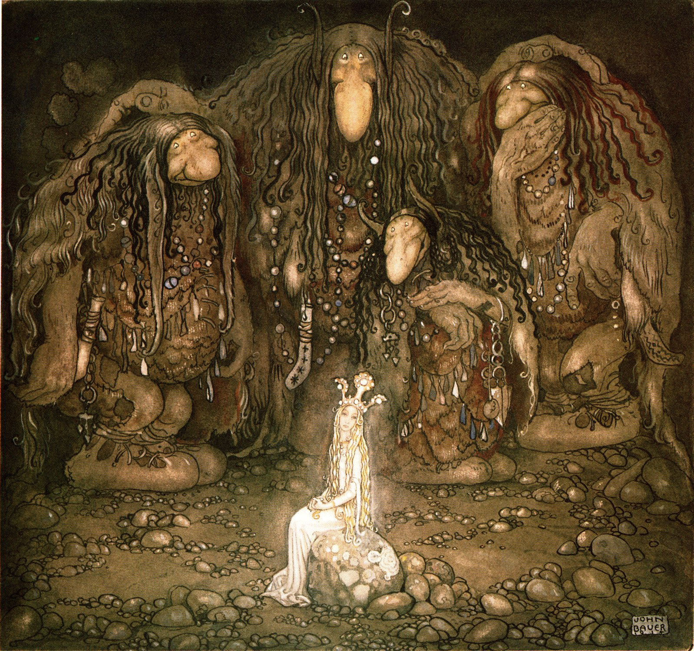
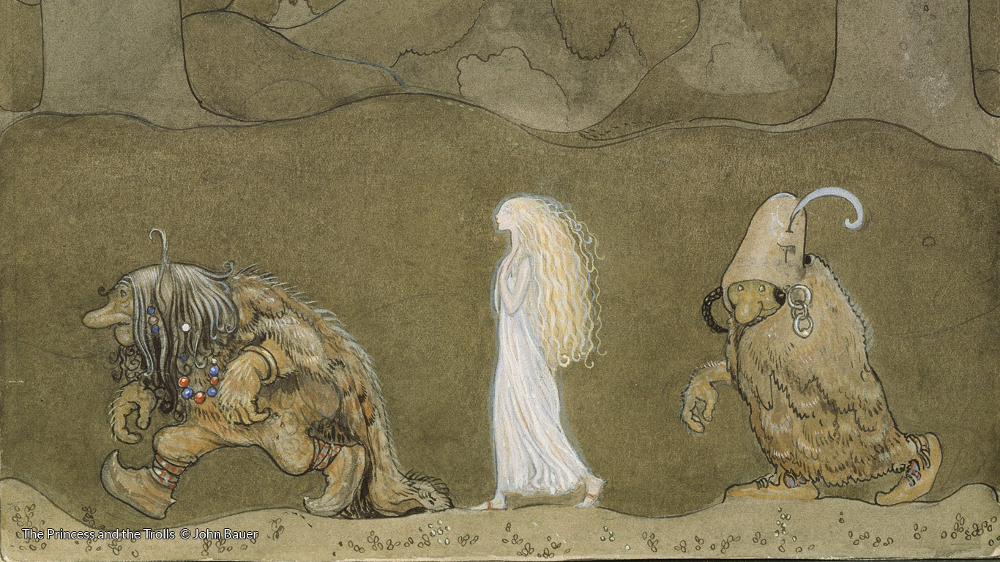

A troll is a being in Nordic folklore, including Norse mythology. In Old Norse sources, beings described as trolls dwell in isolated areas of rocks, mountains, or caves, live together in small family units, and are rarely helpful to human beings.

In later Scandinavian folklore, trolls became beings in their own right, where they live far from human habitation, are not Christianized, and are considered dangerous to human beings. Depending on the source, their appearance varies greatly; trolls may be ugly and slow-witted, or look and behave exactly like human beings, with no particularly grotesque characteristic about them.
